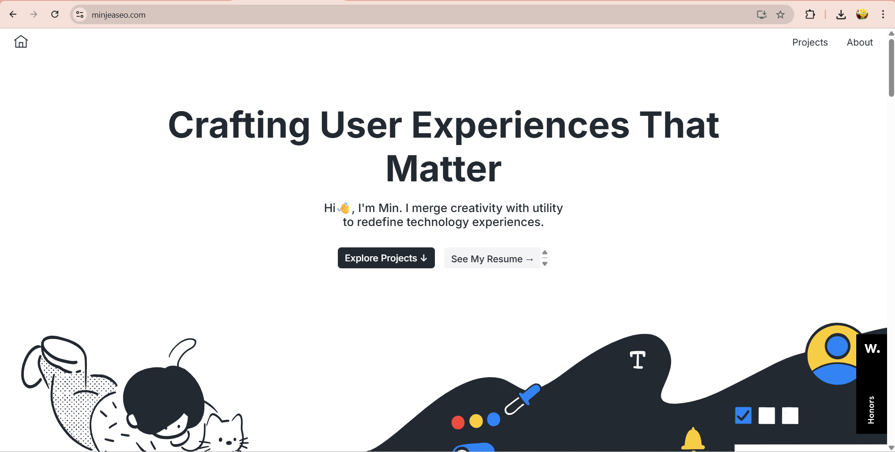
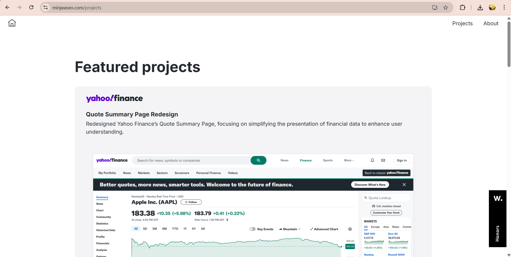
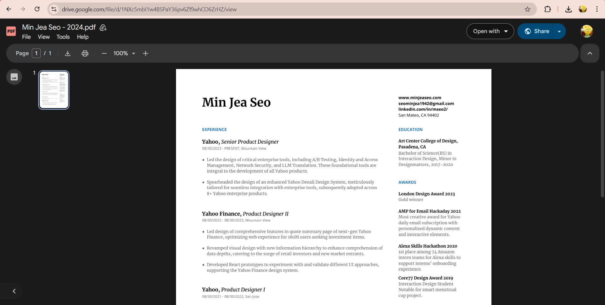
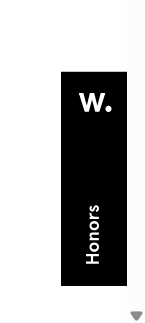
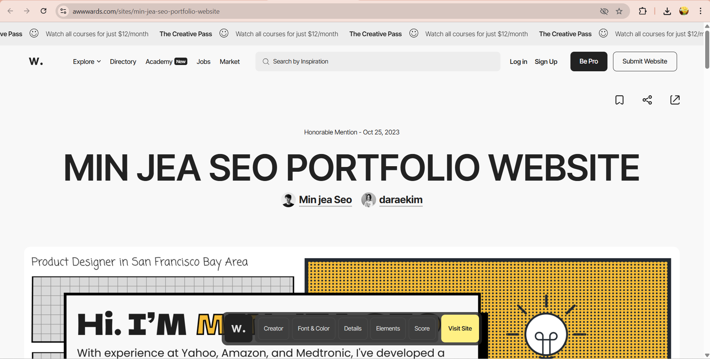
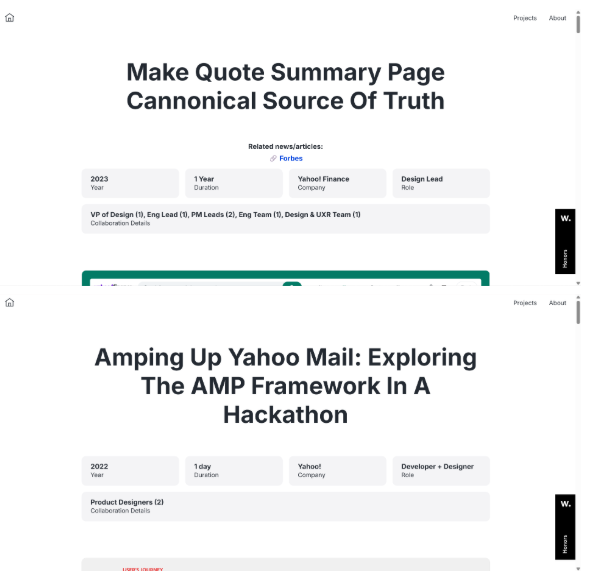

01. What was the first thing you paid attention to when interacting with the experience?
I initially drew my eyes to the hero section. There is a calculated hierarchy between the title, description, and buttons leading to external links, in which the title is bolded, capitalized, and enlarged many times over compared to the other typography, pulling the user's focus in immediately. The font used for this title is a clean, geometric sans-serif, signaling modernity and professionalism. Contributing to this sense of proficiency is the typography and background palette - white and a deep navy blue, creating maximum contrast for readability. The title reads 'Crafting User Experiences That Matter' as an attempt to pique interest, while the friendly description below does the work of explaining, creating a harmonious section where every element serves a purpose.

02. Spend two minutes with the experience and create a list of each of your discrete actions.
Over two minutes, I moved through three main pathways. First, I clicked "Explore Projects", expecting the page to automatically scroll down because of the directional arrow, instead it took me to a subpage called projects. I then scrolled down and tapped into an individual project subpage to read the content.

Second, I clicked "See my Resume →" which took me to a PDF file uploaded on Google Drive in 2024. I enjoyed that this external source also had the same color scheme and sense of minimalism as the webpage, creating a natural flow despite the change of hosted site.
Third, I clicked on the “W. Honors” sidebar element, and was taken to an external Awwwards listing of the portfolio.

03. What role did color play in your interaction with the page?
I spent the most time on the projects section at minjeaseo.com/projects. Skimming through the case studies and navigating between individual project pages required more attention than other parts of the site. There is a good balance between the amount of text and images, with a clear grid system dividing sections of content. It could be a rather overwhelming amount of information for a one-time visitor, but as a senior designer, Min's working history and perspective are well-reflected in these subpages.
04. What was the most common action in your two-minute interaction with the experience?
Clicking was by far my most repeated action during the two-minute experience. I moved between pages, opened subpages, and followed sidebar links, making clicking the dominant mode of interaction rather than scrolling or reading. Content is either displayed in a block or triggers a cursor change, immediately signaling which elements are interactive. I became fully aware of the layout within just a few minutes, which suggests the navigation is well-structured and intentional where a portfolio is expected to be as frictionless as possible to browse. However, the monotone color scheme works against this, as no section feels significantly more prominent than another, making interaction feel uninspiring shortly after arriving.
05. What is your impression of the intended primary goal of the interactive experience?
In my personal opinion, the website aimed to present work experience in a clean, professional context, suitable for a work environment, and to present this portfolio to recruiters, clients, or collaborators. The design served perfectly for brief reviewing and effective evaluation of the author. However, with such minimalistic execution to the point it feels underwhelming, I am quite disappointed in the interface, especially considering the work comes from a senior designer. These restraints suggested an intention to let the work speak for itself, though they obliterate a majority of personality and branding, which are two qualities that distinguish a memorable portfolio from an only functional one.
06. How does the interactive experience communicate this primary goal?
The web generally communicates its goal through modest visual language: monotone colors, minimal illustration and a clean layout. By removing decorative noise, the design directs attention toward the project content itself, despite the lack of personality that makes it hard to sense the designer’s identity. There are still clear visual priorities at play, for example the hero section contained two buttons (refer to image of Question 01.), with the one to the left easier to notice, having high contrast between it and the background.
07. What is your impression of how the experience should be interacted with over time? (For how long and how many different times)
The portfolio reads as an infrequently visited site for recruiters and collaborators to browse briefly during evaluation. My personal estimation of visiting time would be anywhere from 5 minutes to an hour, depending on whether readers are skimming or looking for specific information. A portfolio could create opportunities for users to return a second time, either to validate the author's experience or for social networking purposes. For the author themselves, regularly updating and documenting their ongoing work history - new collaborations, personal projects, and company work, would naturally encourage others to revisit over time.
08. How does the interactive experience communicate how it should be interacted with over time?
There is consistency in how elements - header, a sidebar, and a box-based project grid - to signal the web’s navigational logic. Although, the web missed large sections of other evaluations: no blog, no social links, no "latest work" section,... This absence communicates that the site is not designed for return visits, only for one-time evaluations.
09. What other media forms (digital or otherwise) does the experience reference?
The experience references two other media forms of external web pages embedded or linked through project images, and a printable PDF resume hosted on Google Drive (refer to Question 02.). These extensions pull the user outside the portfolio environment and into more functional and communicative formats. The Awwwards listing is where more work experience of Min Jea Seo is introduced and evaluated in numbers, while the PDF summary Min’s worked on projects, degrees,... Given how these external sources sinked in the background more, one could argue these features are introduced as an afterthought.
10. What does this reference/s communicate to you about how you should act when engaging with your research experience?
The linked external pages and PDF suggest users should treat this portfolio as a starting point for research rather than a complete picture. By embedding live project sites and a downloadable resume, the experience encourages users to consume medias with more informations. This signals that the intended mode of interaction is one of active investigaton rather than passive reading or skimming. The design assumes a motivated viewer, likely a recruiter or collaborator, who is willing to follow these extensions to form a fuller understanding of the designer's capabilities. Although on a personal scale, this combination with the modest interface do not sparks much interest for exploration.
11. What does this reference/s communicate to you about how you should feel when engaging with your research experience?
The inclusion of a polished PDF resume and cleanly formatted external links communicates a sense of professionalism and credibility, positioning the designer as organised and intentional. These references set a formal, business-like tone that aligns with the portfolio's broader visual restraint. However, the sparse visual environment makes the overall experience feel neutral and detached, more suitable for transactional performances. There is little that invites emotional engagement or curiosity beyond the functional. For a creative professional, this emotional flatness feels like a missed opportunity, as a portfolio is not only a record of work but a reflection of personality and design sensibility, which is something uncompensatable by the external references alone.
12. What is the most frustrating part of the interaction to you and what makes that part frustrating?
The most frustrating element was the repeated use of the same layout format across both the featured projects section on the homepage and the related projects section within individual subpages. Because the visual structure was identical, it became difficult to know which page I was on, disrupting the sense of navigation and making the experience feel repetitive.

13. What is the most satisfying part of the interaction to you and what makes that part satisfying?
The minimalistic design and concise information architecture made browsing feel effortless. Content was easy to locate and digest without feeling overwhelmed, which created a calm interaction, which is something often harder to achieve than it looks in portfolio design. Many portfolios overcrowd their pages in an attempt to showcase everything at once, resulting in a cluttered experience that undermines the work itself. Min Jea Seo avoids this by trusting the layout to guide the viewer naturally, allowing each project to breathe. This restraint communicates a quiet confidence in the work, and for that reason alone, the simplicity feels like a deliberate and considered design decision rather than a lack of effort.